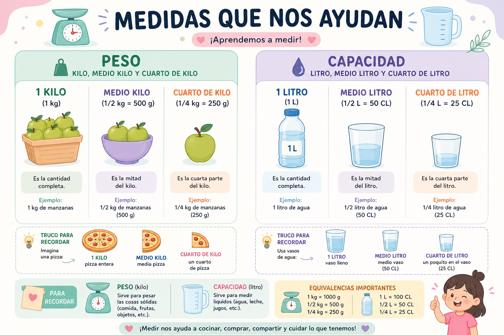
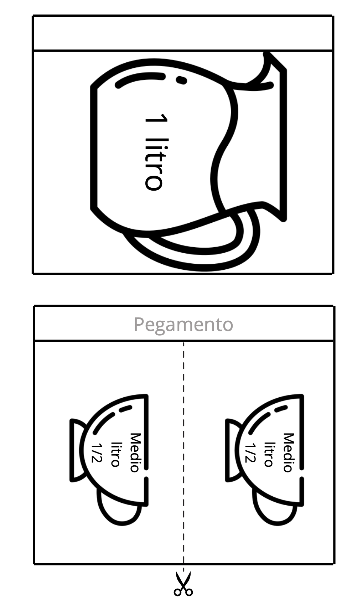
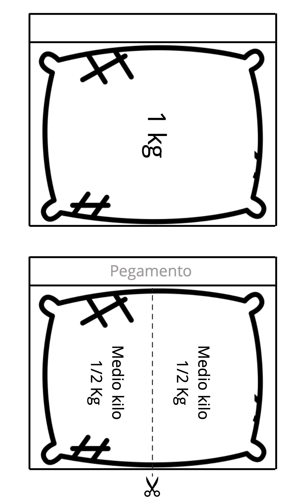
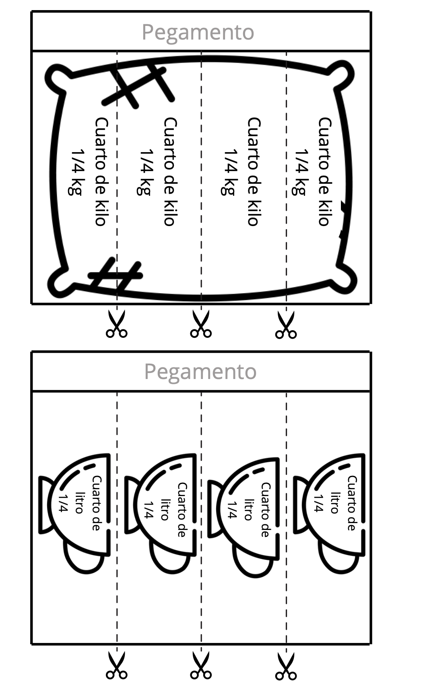
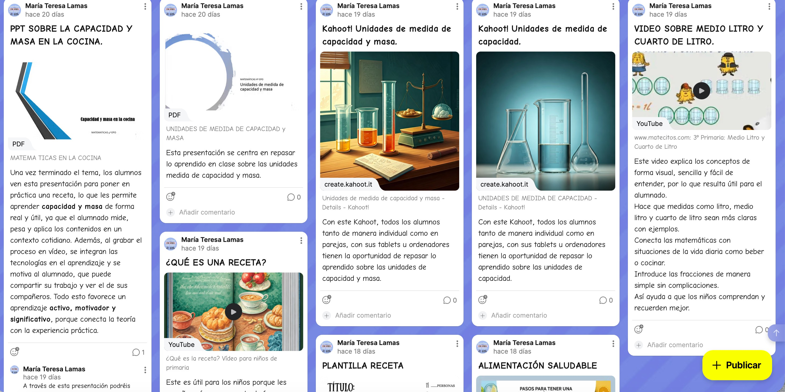
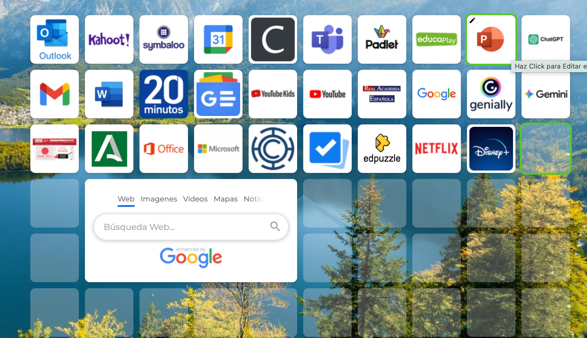

¡Aventura para los Pequeños Chefs! 🧑🍳
¡Bienvenidos al taller de instrumentos de medida y creación de flipbooks sobre las unidades de medida de capacidad y masa!
Estas actividades sobre las unidades de medida de capacidad y masa permiten a los niños comprender mejor qué son las magnitudes y cómo se utilizan en la vida diaria. A través de ejemplos y explicaciones, aprenden a identificar unidades como el kilogramo, gramo, litro y mililitro, así como a entender sus equivalencias y realizar conversiones entre ellas.
Además, favorecen el desarrollo de habilidades matemáticas como el cálculo, la comparación de cantidades y la resolución de problemas. También ayudan a relacionar estos contenidos con situaciones reales, midiendo ingredientes en recetas o utilizando instrumentos de medida.
La utilidad de estas actividades radica en que facilitan un aprendizaje visual y significativo, haciendo más comprensibles conceptos abstractos.
Sus principales objetivos son que el alumnado reconozca las unidades de medida, sepa utilizarlas correctamente, realice conversiones entre ellas y valore la importancia de las medidas en la vida cotidiana, desarrollando al mismo tiempo el razonamiento lógico y la autonomía.
¡Vamos allá!💪

Imagen creada por la autora con DALL-E 3



Flipbook obtenido en Pinterest.
Aquí tenéis el primer enlace que es un resumen estructurado de algunas de las actividades que vamos a realizar.
Se recopilan materiales digitales como presentaciones de Power Point, vídeos explicativos, una plantilla para escribir una receta, juegos interactivos como los kahoots sobre capacidad y masa adaptados al nivel de 4º de Primaria. Estos recursos están categorizados y estructurados para garantizar un aprendizaje significativo, fomentando la autonomía y el acceso sencillo a información de calidad.

Actividad creada por la autora con Padlet.
Aquí tenéis el segundo enlace donde el profesor, aunque también el alumnado, puede ver las diferentes aplicaciones que podrá utilizar diariamente.
Ahora, a través de un mosaico interactivo, los alumnos podrán acceder de manera rápida y sencilla a materiales educativos, actividades interactivas, vídeos y herramientas como Canva y Kahoots, diseñados para trabajar las unidades de medida de capacidad y masa y aprendizaje lúdico. Esta organización facilita el acceso, fomenta la autonomía en el aprendizaje y asegura que los recursos estén adaptados a las necesidades y niveles de los alumnos.

Cuadro de aplicaciones creado por la autora con Symbaloo.
De esta manera, ambos elementos se complementan entre sí: el primero garantiza la calidad y pertinencia de los recursos que se emplearán en la SdA "Recetas con ciencia: gramos, litros y diversión", mientras que el segundo ofrece una organización visual e interactiva que facilita el acceso y mejora la experiencia tanto del alumnado como del profesorado. En conjunto, favorecen un aprendizaje estructurado, dinámico y ajustado a las necesidades de los estudiantes.
Asimismo, esta combinación impulsa la autonomía del alumnado, permitiéndoles explorar los recursos a su propio ritmo dentro de un entorno organizado y seguro. Para el docente, supone una forma eficaz de gestionar las herramientas, asegurando su disponibilidad y actualización en un formato atractivo. En el contexto de "Recetas con ciencia: gramos, litros y diversión", esta organización contribuye a conectar los contenidos teóricos (como el sistema de unidades de medida) con actividades prácticas e interactivas que promueven un aprendizaje significativo a través de la conversión de medidas y su aplicación en la elaboración de una receta.